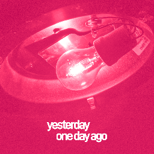

Yesterday, one day ago is the first EP by German Neocities user Strata. The EP features samples of a number of audio tracks; Willy Wonka & the Chocolate Factory, Twin Peaks, and Synthetic Substitution just to name a few. 
The EP has 8 tracks in total, but only lasts just under 20 minutes.
In the README file for the EP (LinerNotes.txt), Strata writes;
First, I'd like to thank you, dear listener, for listening to this heap of shit. I'd also like OwlMan ...
1) For giving the valuable feedback I did not want to hear during the refinement of these tracks.
2) For hosting the Opus files for web-based listening.
The EP came-out on the 7th of March 2018 to a positive reception
The album can be found on Strata's website, along with this the album can also be found on The Internet Archive.